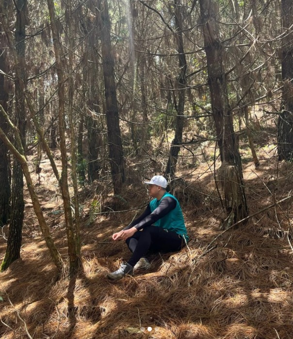
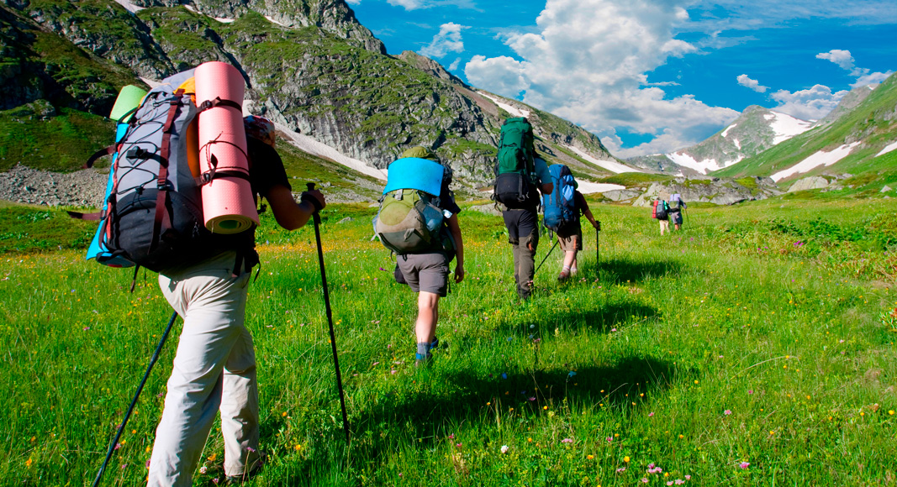

Iniciacion en senderismo
En este apartado daremos una explicacions sobre el senderismo,
la naturaleza, y como iniciar en el este magico mundo

la conexion con la naturaleza es lo mas importante.
el llegar a lugares llenos de paz y tranquilidad
¿Como iniciar en este magico mundo?
La verdad no hay mucha ciencia detras del inicio en el senderimo, realmente
todo parte de las ganas y
la motivacion que tengas de caminar, escalar, trepar
y conquistar cerros y montañas, debes tener en cuenta
que los dias que vayas
a realizar senderismo, es indispensable evitar el consumo de bebidas alcoholicas o
algun tipo
de alucinogeno, ya que estos afectan directamente nuestro desempeño.

La imagen nos muestra el equipaje que algunas veces llevamos
a la hora de practicar el Senderismo como pasatiempo